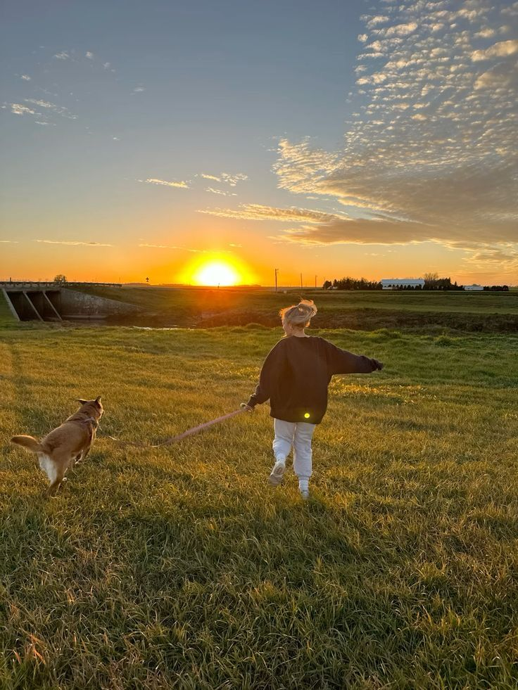

Furamora connects London pet owners with trusted, verified dog walkers — with live GPS tracking and detailed reports after every visit.
Every service is designed with transparency and safety at its core — so you can relax while your pet is in great hands.
Daily and ad-hoc walks tailored to your dog's energy, age and breed — with real-time GPS so you can track every step.
Home visits for feeding, water, playtime and litter changes. Ideal for cats and dogs who prefer to stay in their own environment.
Receive a detailed written update after every walk. Know exactly how your pet's day went, every time.
From registration to your first completed walk — Furamora makes the whole process straightforward.
Register as a pet owner or dog walker in minutes. Set up your profile, add your pets and you're ready to go.
Browse available walkers near you, choose your preferred date and time, and submit a booking request instantly.
Follow your dog's walk live on the map and receive a full written report when the session is complete.

Existing platforms charge high commissions and offer little real-time visibility. Furamora was built specifically for London — keeping costs low and communication clear.
Separate dashboards for owners, walkers and admin — each with the right tools and no unnecessary clutter.
See exactly where your dog is during a walk — powered by Google Maps API with real-time GPS updates.
Earn loyalty points with every completed booking. Points build towards future discounts and rewards.
Walkers submit a report after each session so owners always know how their pet is doing.
Have a question about Furamora? Whether you're a pet owner or a dog walker, we're here to help. Get in touch and we'll get back to you as soon as possible.